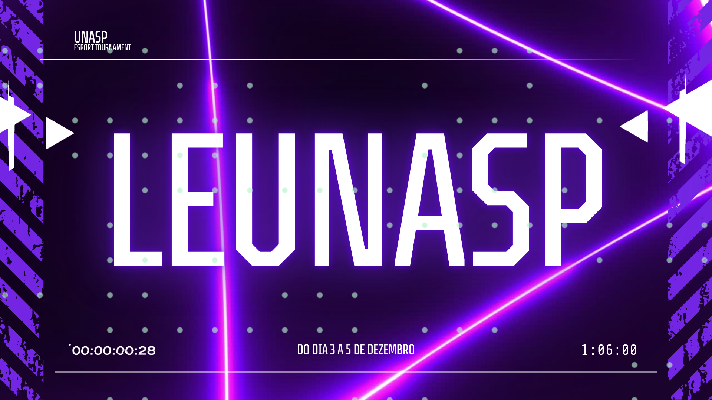

For You - Ojuk4

Sobre o artista
Ojuk4
9.999.999 ouvintes mensais
Artista brasileiro independente, trapper, dj, e amante de música Murilo Conti de Lima Pércio com seus intensivos e alternativos sons de diversos gêneros ajudando os fãs a capturarem o sentimento de paz.
Créditos
Murilo Conti de Lima Pércio
Artista principal, Compositor, Produtor
Márcio Marçal da Costa Garcia
Desenvolvedor WEB, Maestro
João Victor Tavares de Souza
Projetista, Namorado da Emilly
Eventos
